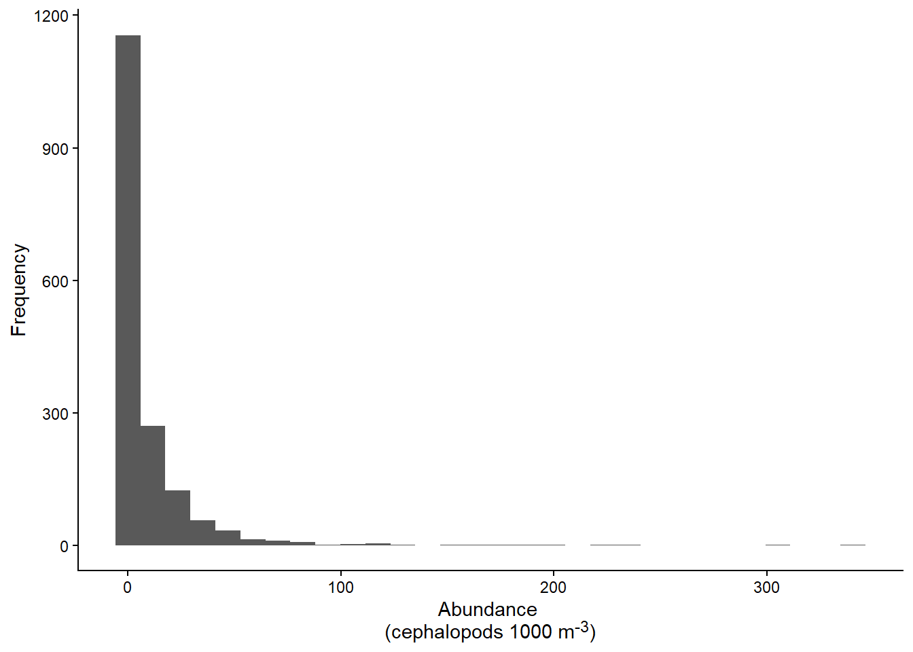
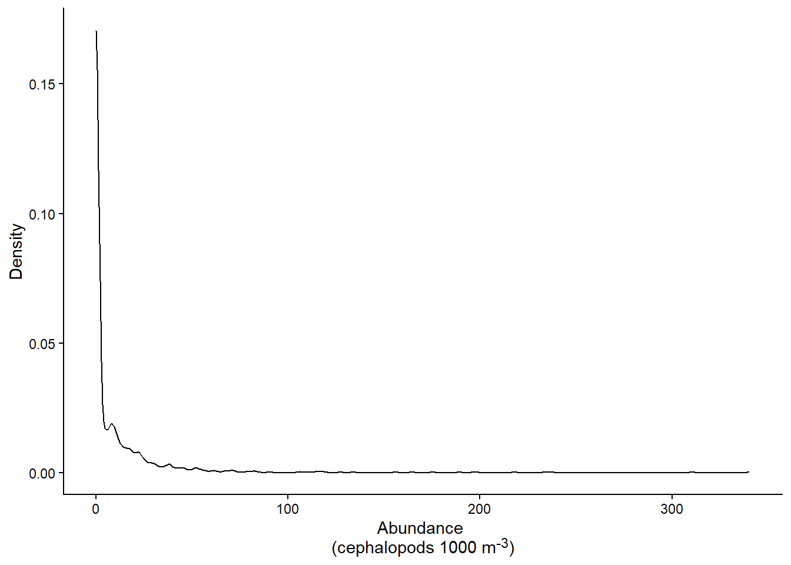
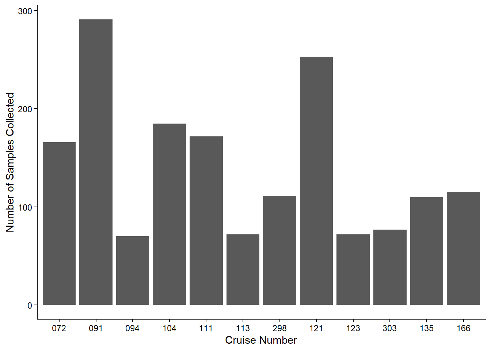
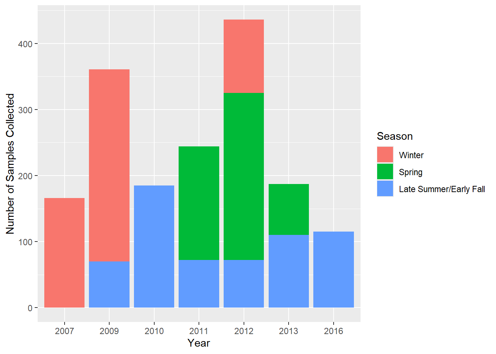
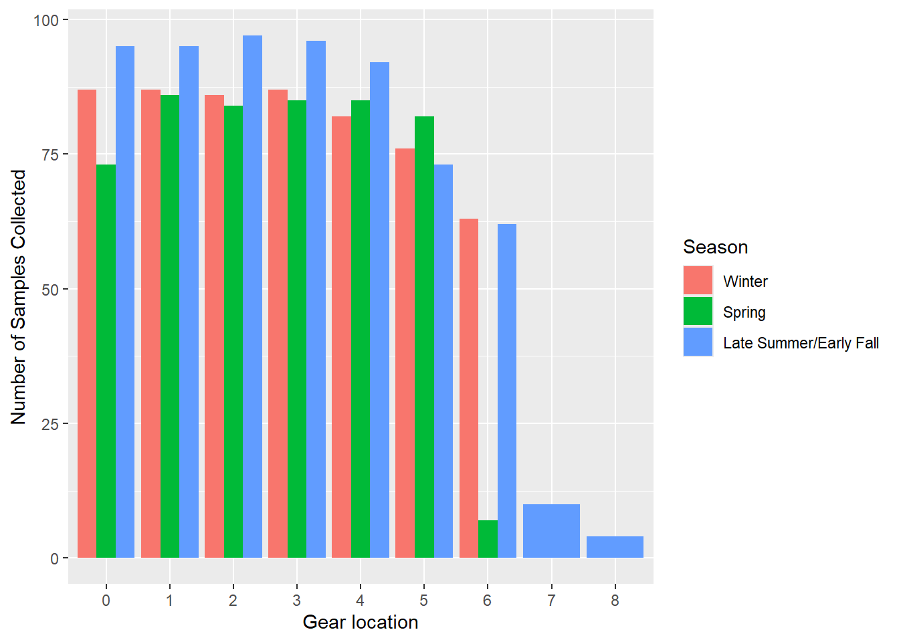
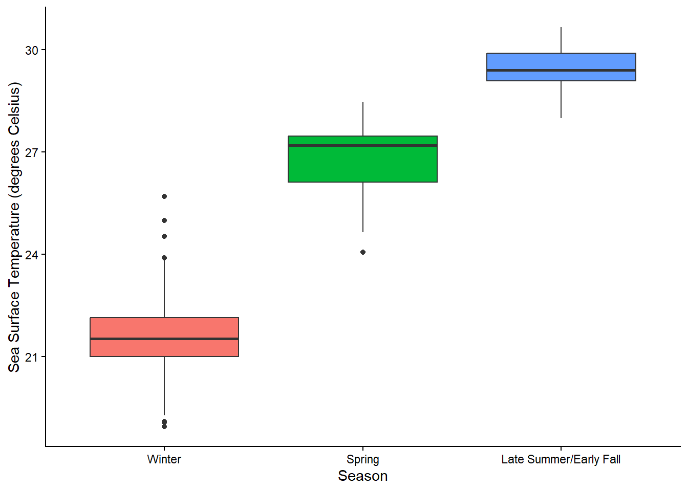
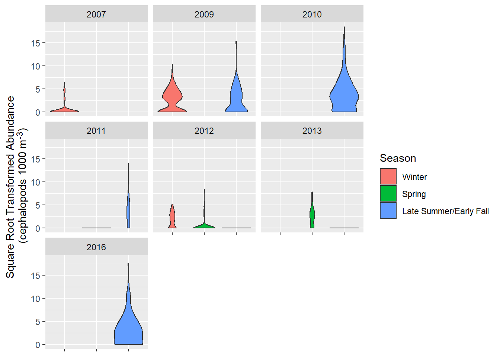
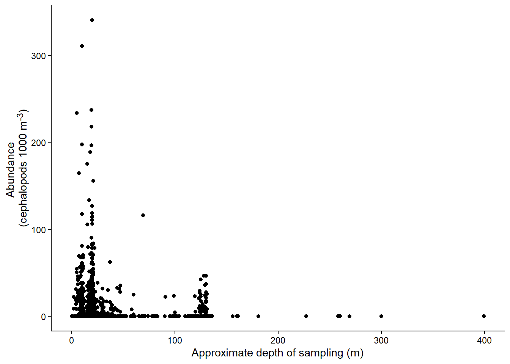
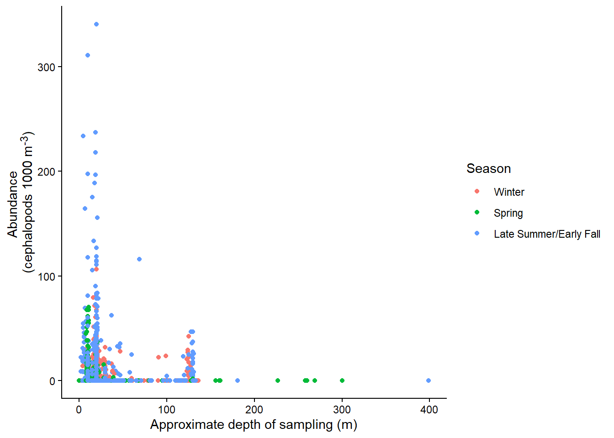
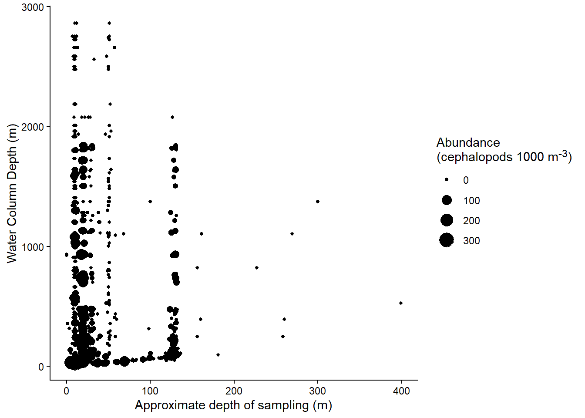

cephs <- read_excel('data/SEAMAP_Cephalopod.xls', sheet = 'MOCNESS')Riley_Project2
Project Description
This project will create a Shiny app to explore a selected dataset.
Data Description
I have selected data from the Southeast Area Monitoring and Assessment Program’s (SEAMAP) plankton surveys as my data for this project. This is a of plankton sampling cruises for several years, separated by the type of net used. I will only be using data from cruises that used a multiple opening-closing net and environmental sensing system (MOCNESS). I used a portion of this data for my master’s thesis, so I am excited to explore the data I wasn’t able to use before.
Data Exploration
Read in the data for only the MOCNESS samples (2nd sheet of the excel file:
Produce a general summary of the data:
str(cephs)tibble [1,694 × 32] (S3: tbl_df/tbl/data.frame)
$ VESSEL : chr [1:1694] "63" "63" "63" "63" ...
$ CRUISE_NO : chr [1:1694] "072" "072" "072" "072" ...
$ P_STA_NO : chr [1:1694] "00003" "00003" "00003" "00003" ...
$ SEAMAP : chr [1:1694] "B165" "B165" "B165" "B165" ...
$ SAMPLE_NO : chr [1:1694] "33539" "33540" "33541" "33542" ...
$ CEPH_COUNT: num [1:1694] 0 0 0 0 0 0 0 1 0 0 ...
$ GEAR_ICD : chr [1:1694] "09" "09" "09" "09" ...
$ GEAR_LOC : chr [1:1694] "0" "1" "2" "3" ...
$ MESH_ICD : chr [1:1694] "05" "05" "05" "05" ...
$ NET_NO : logi [1:1694] NA NA NA NA NA NA ...
$ S_LAT : num [1:1694] 29.2 29.2 29.2 29.2 29.2 ...
$ S_LON : num [1:1694] -86 -86 -86 -86 -86 ...
$ GEAR_IN : POSIXct[1:1694], format: "2007-03-18 16:04:28" "2007-03-18 16:42:47" ...
$ GEAR_OUT : POSIXct[1:1694], format: "2007-03-18 16:42:43" "2007-03-18 16:46:48" ...
$ TOWTIME : num [1:1694] 38.25 4.02 6.22 6.42 6.23 ...
$ MONTH : num [1:1694] 3 3 3 3 3 3 3 3 3 3 ...
$ YEAR : num [1:1694] 2007 2007 2007 2007 2007 ...
$ SEASON : chr [1:1694] "WINTER" "WINTER" "WINTER" "WINTER" ...
$ VESSEL_SPD: num [1:1694] 1.8 1.8 1.8 1.8 1.8 1.8 1.8 1.4 1.4 1.4 ...
$ VOL_FILT : num [1:1694] 1342 208 310 323 316 ...
$ DEPTH_IBEG: num [1:1694] 0 117 99 80 59 39 18 0 60 39 ...
$ DEPTH_IEND: num [1:1694] 118 99 80 60 39 19 13 60 40 20 ...
$ DEPTH_IMAX: num [1:1694] 118 117 99 80 59 39 18 60 60 39 ...
$ VOL_DISP : num [1:1694] 134 25 30 30 94 218 43 138 67 110 ...
$ DEPTH_SSTA: num [1:1694] 107 107 107 107 107 107 107 40 40 40 ...
$ TEMP_SSURF: num [1:1694] 18.9 18.9 18.9 18.9 18.9 ...
$ TEMP_BOT : num [1:1694] 14.4 14.4 14.4 14.4 14.4 ...
$ TEMP_SAIR : num [1:1694] 17.4 17.4 17.4 17.4 17.4 17.4 17.4 16.2 16.2 16.2 ...
$ B_PRSSR : num [1:1694] 1024 1024 1024 1024 1024 ...
$ ITS_CODE : chr [1:1694] "US-WP" "US-WP" "US-WP" "US-WP" ...
$ V_C_P : chr [1:1694] "6307200003" "6307200003" "6307200003" "6307200003" ...
$ V_C_P_S : chr [1:1694] "630720000333539" "630720000333540" "630720000333541" "630720000333542" ...- Variable descriptions:
- VESSEL= Vessel number (I can give you a list if you want)
- CRUISE_NO = Cruise number
- P_STA_NO = Sequential station number for that cruise
- SEAMAP = Designated standard grid number
- SAMPLE_NO = Unique sample number
- CEPH_COUNT = number of cephalopods counted/pulled
- GEAR_ICD = Gear designation (01=bongo, 03=nesuton, 09=MOCNESS, etc.)
- GEAR_LOC = sample location (mainly for bongos, R or L)
- MESH_ICD = Mesh size (03=0.333mm)
- NET_NO = Net number - Mainly for the MOCNESS tows
- S_LAT= Latitude in decimal degrees
- S_LON = Longitude in decimal degrees
- GEAR_IN = Time the gear went into the water (started fishing) in GMT
- GEAR_OUT = Time the gear came out of the water (stopped fishing) in GMT
- TOWTIME = Time gear was towed (decimal minutes)
- MONTH = Month
- YEAR = Year
- SEASON = Survey season
- VESSEL_SPD = vessel speed (knots)
- VOL_FILT = volume filtered by the nets (cubic meters)
- DEPTH_IBEG = depth of the beginning of the tow (meters)
- DEPTH_IEND = depth at the end of the tow (meters)
- DEPTH_IMAX = maximum depth of the tow (meters)
- VOL_DISP = volume displacement of the sample prior to processing (milliliters)
- DEPTH_SSTA = station depth (fathoms)
- TEMP_SSURF = surface water temp in Celsius
- TEMP_BOT = bottom water temp in Celsius
- TEMP_SAIR = air temp in Celsius
- B_PRSSR = barometric pressure (millibars)
- ITS_CODE = survey code
- V_C_P = concatenation of vessel, cruise, and station number
- V_C_P_S = concatenation of vessel, cruise, station number. and sample number
Check for missing data:
cephs |> summarize(across(everything(), ~ sum(is.na(.))))# A tibble: 1 × 32
VESSEL CRUISE_NO P_STA_NO SEAMAP SAMPLE_NO CEPH_COUNT GEAR_ICD GEAR_LOC
<int> <int> <int> <int> <int> <int> <int> <int>
1 0 0 0 380 0 0 0 0
# ℹ 24 more variables: MESH_ICD <int>, NET_NO <int>, S_LAT <int>, S_LON <int>,
# GEAR_IN <int>, GEAR_OUT <int>, TOWTIME <int>, MONTH <int>, YEAR <int>,
# SEASON <int>, VESSEL_SPD <int>, VOL_FILT <int>, DEPTH_IBEG <int>,
# DEPTH_IEND <int>, DEPTH_IMAX <int>, VOL_DISP <int>, DEPTH_SSTA <int>,
# TEMP_SSURF <int>, TEMP_BOT <int>, TEMP_SAIR <int>, B_PRSSR <int>,
# ITS_CODE <int>, V_C_P <int>, V_C_P_S <int># More convenient to view
colSums(is.na(cephs)) VESSEL CRUISE_NO P_STA_NO SEAMAP SAMPLE_NO CEPH_COUNT GEAR_ICD
0 0 0 380 0 0 0
GEAR_LOC MESH_ICD NET_NO S_LAT S_LON GEAR_IN GEAR_OUT
0 0 1694 0 0 0 0
TOWTIME MONTH YEAR SEASON VESSEL_SPD VOL_FILT DEPTH_IBEG
0 0 0 0 811 1 0
DEPTH_IEND DEPTH_IMAX VOL_DISP DEPTH_SSTA TEMP_SSURF TEMP_BOT TEMP_SAIR
0 0 702 0 0 1169 176
B_PRSSR ITS_CODE V_C_P V_C_P_S
176 0 0 0 Before starting any additional EDA, I’m going to remove the variables with the most NAs:
cephs <- cephs |> select(!c(NET_NO, VESSEL_SPD, VOL_DISP, TEMP_BOT))Now I’ll look at a summary of the remaining variables:
summary(cephs) VESSEL CRUISE_NO P_STA_NO SEAMAP
Length :1694 Length :1694 Length :1694 Length :1694
N.unique : 3 N.unique : 12 N.unique : 142 N.unique : 108
N.blank : 0 N.blank : 0 N.blank : 0 N.blank : 0
Min.nchar: 2 Min.nchar: 3 Min.nchar: 5 Min.nchar: 3
Max.nchar: 2 Max.nchar: 3 Max.nchar: 5 Max.nchar: 5
NAs : 380
SAMPLE_NO CEPH_COUNT GEAR_ICD GEAR_LOC
Length :1694 Min. : 0.00 Length :1694 Length :1694
N.unique :1693 1st Qu.: 0.00 N.unique : 1 N.unique : 9
N.blank : 0 Median : 0.00 N.blank : 0 N.blank : 0
Min.nchar: 5 Mean : 2.58 Min.nchar: 2 Min.nchar: 1
Max.nchar: 5 3rd Qu.: 3.00 Max.nchar: 2 Max.nchar: 1
Max. :87.00
MESH_ICD S_LAT S_LON
Length :1694 Min. :15.98 Min. :-96.51
N.unique : 1 1st Qu.:26.00 1st Qu.:-90.51
N.blank : 0 Median :27.50 Median :-86.99
Min.nchar: 2 Mean :26.18 Mean :-87.61
Max.nchar: 2 3rd Qu.:28.32 3rd Qu.:-84.51
Max. :29.99 Max. :-77.84
GEAR_IN GEAR_OUT TOWTIME
Min. :2007-03-18 16:04:28 Min. :2007-03-18 16:42:43 Min. :-87.000
1st Qu.:2009-03-14 17:34:58 1st Qu.:2009-03-14 17:42:15 1st Qu.: 5.683
Median :2011-05-08 03:31:22 Median :2011-05-08 03:38:15 Median : 6.633
Mean :2011-04-21 22:28:56 Mean :2011-04-21 22:36:16 Mean : 7.319
3rd Qu.:2012-05-21 16:40:36 3rd Qu.:2012-05-21 16:47:29 3rd Qu.: 7.925
Max. :2016-09-29 07:19:47 Max. :2016-09-29 07:26:44 Max. : 59.083
MONTH YEAR SEASON VOL_FILT
Min. :1.000 Min. :2007 Length :1694 Min. : 10.0
1st Qu.:3.000 1st Qu.:2009 N.unique : 3 1st Qu.: 247.0
Median :5.000 Median :2011 N.blank : 0 Median : 287.0
Mean :5.466 Mean :2011 Min.nchar: 6 Mean : 314.7
3rd Qu.:9.000 3rd Qu.:2012 Max.nchar: 10 3rd Qu.: 347.0
Max. :9.000 Max. :2016 Max. :2284.0
NAs :1
DEPTH_IBEG DEPTH_IEND DEPTH_IMAX DEPTH_SSTA
Min. : 0.00 Min. : 0.00 Min. : 0.00 Min. : 23.0
1st Qu.: 19.00 1st Qu.: 19.00 1st Qu.: 21.00 1st Qu.: 70.0
Median : 39.00 Median : 40.00 Median : 42.35 Median : 189.0
Mean : 47.15 Mean : 46.86 Mean : 56.40 Mean : 525.3
3rd Qu.: 68.00 3rd Qu.: 66.00 3rd Qu.: 80.00 3rd Qu.: 800.0
Max. :398.00 Max. :399.00 Max. :398.60 Max. :2862.0
TEMP_SSURF TEMP_SAIR B_PRSSR ITS_CODE
Min. :18.95 Min. :12.10 Min. :1008 Length :1694
1st Qu.:22.13 1st Qu.:23.40 1st Qu.:1012 N.unique : 6
Median :27.24 Median :26.90 Median :1015 N.blank : 0
Mean :26.05 Mean :25.67 Mean :1015 Min.nchar: 4
3rd Qu.:29.17 3rd Qu.:28.10 3rd Qu.:1017 Max.nchar: 5
Max. :30.65 Max. :33.40 Max. :1028
NAs :176 NAs :176
V_C_P V_C_P_S
Length :1694 Length :1694
N.unique : 271 N.unique :1693
N.blank : 0 N.blank : 0
Min.nchar: 10 Min.nchar: 15
Max.nchar: 10 Max.nchar: 15
The variables GEAR_ICD and MESH_ICD only have one unique value each - this is because they are associated with the type of net being used; so I will remove them from the dataset
cephs <- cephs |> select(!c(GEAR_ICD, MESH_ICD))Based on the str() call above, it looks like all of the variables are the correct type. However, some could be changed to factors. I’ll do that for the following variables: VESSEL, CRUISE_NO, GEAR_LOC, and SEASON. Additionally, I think month and year could be treated as numeric or categorical, so I’ll make a factor version of those variables, but retain the numeric version as well.
cephs <- cephs |> mutate(VESSEL = as.factor(VESSEL),
CRUISE_NO = factor(CRUISE_NO,
levels = c("072", "091", "094", "104", "111", "113", "298", "121", "123", "303", "135", "166")),
GEAR_LOC = as.factor(GEAR_LOC),
SEASON = factor(SEASON,
levels = c('WINTER', 'SPRING', 'EARLY FALL'),
labels = c('Winter', 'Spring', 'Late Summer/Early Fall')),
fYEAR = factor(YEAR),
fMONTH = factor(MONTH)
)
# Check if it looks right
cephs# A tibble: 1,694 × 28
VESSEL CRUISE_NO P_STA_NO SEAMAP SAMPLE_NO CEPH_COUNT GEAR_LOC S_LAT S_LON
<fct> <fct> <chr> <chr> <chr> <dbl> <fct> <dbl> <dbl>
1 63 072 00003 B165 33539 0 0 29.2 -86.0
2 63 072 00003 B165 33540 0 1 29.2 -86.0
3 63 072 00003 B165 33541 0 2 29.2 -86.0
4 63 072 00003 B165 33542 0 3 29.2 -86.0
5 63 072 00003 B165 33543 0 4 29.2 -86.0
6 63 072 00003 B165 33544 0 5 29.2 -86.0
7 63 072 00003 B165 33545 0 6 29.2 -86.0
8 63 072 00004 B159 33549 1 0 29.0 -85.5
9 63 072 00004 B159 33550 0 1 29.0 -85.5
10 63 072 00004 B159 33551 0 2 29.0 -85.5
# ℹ 1,684 more rows
# ℹ 19 more variables: GEAR_IN <dttm>, GEAR_OUT <dttm>, TOWTIME <dbl>,
# MONTH <dbl>, YEAR <dbl>, SEASON <fct>, VOL_FILT <dbl>, DEPTH_IBEG <dbl>,
# DEPTH_IEND <dbl>, DEPTH_IMAX <dbl>, DEPTH_SSTA <dbl>, TEMP_SSURF <dbl>,
# TEMP_SAIR <dbl>, B_PRSSR <dbl>, ITS_CODE <chr>, V_C_P <chr>, V_C_P_S <chr>,
# fYEAR <fct>, fMONTH <fct>This is still a lot of variables, but not all of them would be expected to have an effect on the others. For example, which vessel was used to conduct the survey should not have an effect on any of the other variables. Other variables provide much of the same information, such as V_C_P, V_C_P_S, and SEAMAP. I will likely choose a subset of the variables for the user to explore in the Shiny app.
Save this version of the data set for use in the Shiny app:
write_csv(cephs, 'data/cephs.csv')Make a list of numeric variables:
numVar <- c('CEPH_COUNT', 'S_LAT', 'S_LON', 'TOWTIME', 'MONTH', 'YEAR', 'VOL_FILT', 'DEPTH_IBEG', 'DEPTH_IEND', 'DEPTH_IMAX', 'DEPTH_SSTA', 'TEMP_SSURF', 'B_PRSSR')Make a list of categorical variables:
catVar <- c('VESSEL', 'CRUISE_NO', 'P_STA_NO', 'SEAMAP', 'SAMPLE_NO', 'GEAR_LOC', 'SEASON', 'ITS_CODE', 'V_C_P', 'V_C_P_S', 'fYEAR', 'fMONTH')Make a list of time variables:
timeVar <- c('GEAR_IN', 'GEAR_OUT')- Of all these variables, I will focus on the following:
- Numeric: cephalopod count, latitude, longitude, volume filtered, depth beginning, depth end, station depth, and sea surface temperature
- Categorical: cruise number, gear location, season, year, month
- Time: gear in, gear out
# Selected numeric variables
selNumVar <- c('CEPH_COUNT', 'S_LAT', 'S_LON', 'VOL_FILT', 'DEPTH_IBEG', 'DEPTH_IEND', 'DEPTH_SSTA', 'TEMP_SSURF')
# Selected categorical variables
selCatVar <- c('CRUISE_NO', 'GEAR_LOC', 'SEASON', 'fYEAR', 'fMONTH')Contingency Tables
One-Way
Create one-way contingency tables for the selected categorical variables
# Cruise number
cephs |>
group_by(CRUISE_NO) |>
summarize(count = n())# A tibble: 12 × 2
CRUISE_NO count
<fct> <int>
1 072 166
2 091 291
3 094 70
4 104 185
5 111 172
6 113 72
7 298 111
8 121 253
9 123 72
10 303 77
11 135 110
12 166 115# Gear location
cephs |>
group_by(GEAR_LOC) |>
summarize(count = n())# A tibble: 9 × 2
GEAR_LOC count
<fct> <int>
1 0 255
2 1 268
3 2 267
4 3 268
5 4 259
6 5 231
7 6 132
8 7 10
9 8 4# Season
cephs |>
group_by(SEASON) |>
summarize(count = n())# A tibble: 3 × 2
SEASON count
<fct> <int>
1 Winter 568
2 Spring 502
3 Late Summer/Early Fall 624# Year
cephs |>
group_by(fYEAR) |>
summarize(count = n())# A tibble: 7 × 2
fYEAR count
<fct> <int>
1 2007 166
2 2009 361
3 2010 185
4 2011 244
5 2012 436
6 2013 187
7 2016 115# Month
cephs |>
group_by(fMONTH) |>
summarize(count = n())# A tibble: 7 × 2
fMONTH count
<fct> <int>
1 1 20
2 2 189
3 3 365
4 4 240
5 5 256
6 8 89
7 9 535Two-Way
Create two-way contingency tables for interesting combinations of categorical variables (not all combinations):
# Cruise number and gear location
cephs |>
group_by(CRUISE_NO, GEAR_LOC) |>
summarize(count = n()) |>
pivot_wider(names_from = GEAR_LOC, values_from = count)`summarise()` has regrouped the output.
ℹ Summaries were computed grouped by CRUISE_NO and GEAR_LOC.
ℹ Output is grouped by CRUISE_NO.
ℹ Use `summarise(.groups = "drop_last")` to silence this message.
ℹ Use `summarise(.by = c(CRUISE_NO, GEAR_LOC))` for per-operation grouping
(`?dplyr::dplyr_by`) instead.# A tibble: 12 × 10
# Groups: CRUISE_NO [12]
CRUISE_NO `0` `1` `2` `3` `4` `5` `6` `7` `8`
<fct> <int> <int> <int> <int> <int> <int> <int> <int> <int>
1 072 25 25 25 25 24 23 19 NA NA
2 091 45 45 44 45 41 38 33 NA NA
3 094 9 9 9 9 9 8 7 7 3
4 104 26 26 27 27 27 26 25 1 NA
5 111 23 29 29 29 29 28 5 NA NA
6 113 12 12 12 12 12 7 4 1 NA
7 298 17 17 17 17 17 15 11 NA NA
8 121 43 42 42 42 42 42 NA NA NA
9 123 11 11 11 11 11 9 8 NA NA
10 303 7 15 13 14 14 12 2 NA NA
11 135 17 17 17 17 16 13 11 1 1
12 166 20 20 21 20 17 10 7 NA NA# Season and gear location
cephs |>
group_by(SEASON, GEAR_LOC) |>
summarize(count = n()) |>
pivot_wider(names_from = GEAR_LOC, values_from = count)`summarise()` has regrouped the output.
ℹ Summaries were computed grouped by SEASON and GEAR_LOC.
ℹ Output is grouped by SEASON.
ℹ Use `summarise(.groups = "drop_last")` to silence this message.
ℹ Use `summarise(.by = c(SEASON, GEAR_LOC))` for per-operation grouping
(`?dplyr::dplyr_by`) instead.# A tibble: 3 × 10
# Groups: SEASON [3]
SEASON `0` `1` `2` `3` `4` `5` `6` `7` `8`
<fct> <int> <int> <int> <int> <int> <int> <int> <int> <int>
1 Winter 87 87 86 87 82 76 63 NA NA
2 Spring 73 86 84 85 85 82 7 NA NA
3 Late Summer/Early Fall 95 95 97 96 92 73 62 10 4# Season and year
cephs |>
group_by(SEASON, fYEAR) |>
summarize(count = n()) |>
pivot_wider(names_from = fYEAR, values_from = count)`summarise()` has regrouped the output.
ℹ Summaries were computed grouped by SEASON and fYEAR.
ℹ Output is grouped by SEASON.
ℹ Use `summarise(.groups = "drop_last")` to silence this message.
ℹ Use `summarise(.by = c(SEASON, fYEAR))` for per-operation grouping
(`?dplyr::dplyr_by`) instead.# A tibble: 3 × 8
# Groups: SEASON [3]
SEASON `2007` `2009` `2012` `2011` `2013` `2010` `2016`
<fct> <int> <int> <int> <int> <int> <int> <int>
1 Winter 166 291 111 NA NA NA NA
2 Spring NA NA 253 172 77 NA NA
3 Late Summer/Early Fall NA 70 72 72 110 185 115Numeric Summaries
Create numeric summaries (means, medians, standard deviations, interquartile range) for quantitative variables at the levels of categorical variables:
cephs |>
group_by(CRUISE_NO) |>
summarize(across(all_of(selNumVar),
list('mean' = ~ signif(mean(.x, na.rm = TRUE), digits = 3),
'median' = ~ signif(median(.x, na.rm = TRUE), digits = 3),
'sd' = ~ signif(sd(.x, na.rm = TRUE), digits = 3),
'IQR' = ~ signif(IQR(.x, na.rm = TRUE), digits = 3)),
.names = "{.fn}_{.col}"),
count = n())# A tibble: 12 × 34
CRUISE_NO mean_CEPH_COUNT median_CEPH_COUNT sd_CEPH_COUNT IQR_CEPH_COUNT
<fct> <dbl> <dbl> <dbl> <dbl>
1 072 1.57 0 5.06 0
2 091 2.92 2 3.73 4
3 094 1.93 0.5 3.49 3
4 104 7.19 3 11.6 10
5 111 0 0 0 0
6 113 4.71 2 7.13 5.25
7 298 1.88 1 2.24 3
8 121 0.846 0 3.32 0
9 123 0 0 0 0
10 303 3.45 2 4.3 4
11 135 0 0 0 0
12 166 6.65 2 11.9 7
# ℹ 29 more variables: mean_S_LAT <dbl>, median_S_LAT <dbl>, sd_S_LAT <dbl>,
# IQR_S_LAT <dbl>, mean_S_LON <dbl>, median_S_LON <dbl>, sd_S_LON <dbl>,
# IQR_S_LON <dbl>, mean_VOL_FILT <dbl>, median_VOL_FILT <dbl>,
# sd_VOL_FILT <dbl>, IQR_VOL_FILT <dbl>, mean_DEPTH_IBEG <dbl>,
# median_DEPTH_IBEG <dbl>, sd_DEPTH_IBEG <dbl>, IQR_DEPTH_IBEG <dbl>,
# mean_DEPTH_IEND <dbl>, median_DEPTH_IEND <dbl>, sd_DEPTH_IEND <dbl>,
# IQR_DEPTH_IEND <dbl>, mean_DEPTH_SSTA <dbl>, median_DEPTH_SSTA <dbl>, …cephs |>
group_by(GEAR_LOC) |>
summarize(across(all_of(selNumVar),
list('mean' = ~ signif(mean(.x, na.rm = TRUE), digits = 3),
'median' = ~ signif(median(.x, na.rm = TRUE), digits = 3),
'sd' = ~ signif(sd(.x, na.rm = TRUE), digits = 3),
'IQR' = ~ signif(IQR(.x, na.rm = TRUE), digits = 3)),
.names = "{.fn}_{.col}"),
count = n())# A tibble: 9 × 34
GEAR_LOC mean_CEPH_COUNT median_CEPH_COUNT sd_CEPH_COUNT IQR_CEPH_COUNT
<fct> <dbl> <dbl> <dbl> <dbl>
1 0 2.23 0 5.32 1
2 1 2.55 0 7.89 2
3 2 1.88 0 3.95 2
4 3 2.04 0 4.47 3
5 4 2.69 0 5.25 3.5
6 5 4.1 0 9.64 4
7 6 3.13 0 6.2 3
8 7 1.2 0 2.82 0.75
9 8 0.25 0 0.5 0.25
# ℹ 29 more variables: mean_S_LAT <dbl>, median_S_LAT <dbl>, sd_S_LAT <dbl>,
# IQR_S_LAT <dbl>, mean_S_LON <dbl>, median_S_LON <dbl>, sd_S_LON <dbl>,
# IQR_S_LON <dbl>, mean_VOL_FILT <dbl>, median_VOL_FILT <dbl>,
# sd_VOL_FILT <dbl>, IQR_VOL_FILT <dbl>, mean_DEPTH_IBEG <dbl>,
# median_DEPTH_IBEG <dbl>, sd_DEPTH_IBEG <dbl>, IQR_DEPTH_IBEG <dbl>,
# mean_DEPTH_IEND <dbl>, median_DEPTH_IEND <dbl>, sd_DEPTH_IEND <dbl>,
# IQR_DEPTH_IEND <dbl>, mean_DEPTH_SSTA <dbl>, median_DEPTH_SSTA <dbl>, …cephs |>
group_by(SEASON) |>
summarize(across(all_of(selNumVar),
list('mean' = ~ signif(mean(.x, na.rm = TRUE), digits = 3),
'median' = ~ signif(median(.x, na.rm = TRUE), digits = 3),
'sd' = ~ signif(sd(.x, na.rm = TRUE), digits = 3),
'IQR' = ~ signif(IQR(.x, na.rm = TRUE), digits = 3)),
.names = "{.fn}_{.col}"),
count = n())# A tibble: 3 × 34
SEASON mean_CEPH_COUNT median_CEPH_COUNT sd_CEPH_COUNT IQR_CEPH_COUNT
<fct> <dbl> <dbl> <dbl> <dbl>
1 Winter 2.32 0 3.99 3
2 Spring 0.956 0 3.1 0
3 Late Summer/Ea… 4.12 0 9.05 4
# ℹ 29 more variables: mean_S_LAT <dbl>, median_S_LAT <dbl>, sd_S_LAT <dbl>,
# IQR_S_LAT <dbl>, mean_S_LON <dbl>, median_S_LON <dbl>, sd_S_LON <dbl>,
# IQR_S_LON <dbl>, mean_VOL_FILT <dbl>, median_VOL_FILT <dbl>,
# sd_VOL_FILT <dbl>, IQR_VOL_FILT <dbl>, mean_DEPTH_IBEG <dbl>,
# median_DEPTH_IBEG <dbl>, sd_DEPTH_IBEG <dbl>, IQR_DEPTH_IBEG <dbl>,
# mean_DEPTH_IEND <dbl>, median_DEPTH_IEND <dbl>, sd_DEPTH_IEND <dbl>,
# IQR_DEPTH_IEND <dbl>, mean_DEPTH_SSTA <dbl>, median_DEPTH_SSTA <dbl>, …cephs |>
group_by(fYEAR) |>
summarize(across(all_of(selNumVar),
list('mean' = ~ signif(mean(.x, na.rm = TRUE), digits = 3),
'median' = ~ signif(median(.x, na.rm = TRUE), digits = 3),
'sd' = ~ signif(sd(.x, na.rm = TRUE), digits = 3),
'IQR' = ~ signif(IQR(.x, na.rm = TRUE), digits = 3)),
.names = "{.fn}_{.col}"),
count = n())# A tibble: 7 × 34
fYEAR mean_CEPH_COUNT median_CEPH_COUNT sd_CEPH_COUNT IQR_CEPH_COUNT
<fct> <dbl> <dbl> <dbl> <dbl>
1 2007 1.57 0 5.06 0
2 2009 2.73 2 3.7 4
3 2010 7.19 3 11.6 10
4 2011 1.39 0 4.41 0
5 2012 0.97 0 2.83 0
6 2013 1.42 0 3.24 1
7 2016 6.65 2 11.9 7
# ℹ 29 more variables: mean_S_LAT <dbl>, median_S_LAT <dbl>, sd_S_LAT <dbl>,
# IQR_S_LAT <dbl>, mean_S_LON <dbl>, median_S_LON <dbl>, sd_S_LON <dbl>,
# IQR_S_LON <dbl>, mean_VOL_FILT <dbl>, median_VOL_FILT <dbl>,
# sd_VOL_FILT <dbl>, IQR_VOL_FILT <dbl>, mean_DEPTH_IBEG <dbl>,
# median_DEPTH_IBEG <dbl>, sd_DEPTH_IBEG <dbl>, IQR_DEPTH_IBEG <dbl>,
# mean_DEPTH_IEND <dbl>, median_DEPTH_IEND <dbl>, sd_DEPTH_IEND <dbl>,
# IQR_DEPTH_IEND <dbl>, mean_DEPTH_SSTA <dbl>, median_DEPTH_SSTA <dbl>, …cephs |>
group_by(fMONTH) |>
summarize(across(all_of(selNumVar),
list('mean' = ~ signif(mean(.x, na.rm = TRUE), digits = 3),
'median' = ~ signif(median(.x, na.rm = TRUE), digits = 3),
'sd' = ~ signif(sd(.x, na.rm = TRUE), digits = 3),
'IQR' = ~ signif(IQR(.x, na.rm = TRUE), digits = 3)),
.names = "{.fn}_{.col}"),
count = n())# A tibble: 7 × 34
fMONTH mean_CEPH_COUNT median_CEPH_COUNT sd_CEPH_COUNT IQR_CEPH_COUNT
<fct> <dbl> <dbl> <dbl> <dbl>
1 1 1 1 1.08 2
2 2 2.98 2 3.84 4
3 3 2.02 0 4.1 3
4 4 0 0 0 0
5 5 1.88 0 4.15 2
6 8 1.42 0 3.46 2
7 9 4.57 1 9.6 5
# ℹ 29 more variables: mean_S_LAT <dbl>, median_S_LAT <dbl>, sd_S_LAT <dbl>,
# IQR_S_LAT <dbl>, mean_S_LON <dbl>, median_S_LON <dbl>, sd_S_LON <dbl>,
# IQR_S_LON <dbl>, mean_VOL_FILT <dbl>, median_VOL_FILT <dbl>,
# sd_VOL_FILT <dbl>, IQR_VOL_FILT <dbl>, mean_DEPTH_IBEG <dbl>,
# median_DEPTH_IBEG <dbl>, sd_DEPTH_IBEG <dbl>, IQR_DEPTH_IBEG <dbl>,
# mean_DEPTH_IEND <dbl>, median_DEPTH_IEND <dbl>, sd_DEPTH_IEND <dbl>,
# IQR_DEPTH_IEND <dbl>, mean_DEPTH_SSTA <dbl>, median_DEPTH_SSTA <dbl>, …Plots
Univariate Plots
# Histogram
ggplot(data = cephs, aes(CEPH_COUNT/VOL_FILT*1000)) +
geom_histogram() +
labs(x = 'Abundance <br>(cephalopods 1000 m<sup>-3</sup>)',
y = 'Frequency') +
theme_classic() +
theme(axis.title.x = element_markdown())`stat_bin()` using `bins = 30`. Pick better value `binwidth`.Warning: Removed 1 row containing non-finite outside the scale range
(`stat_bin()`).
# Density Estimates
ggplot(data = cephs, aes(CEPH_COUNT/VOL_FILT*1000)) +
geom_density() +
labs(x = 'Abundance <br>(cephalopods 1000 m<sup>-3</sup>)',
y = 'Density') +
theme_classic() +
theme(axis.title.x = element_markdown())Warning: Removed 1 row containing non-finite outside the scale range
(`stat_density()`).
# Bar chart
ggplot(data = cephs, aes(CRUISE_NO)) +
geom_bar() +
labs(x = 'Cruise Number',
y = 'Number of Samples Collected') +
theme_classic()
Multivariate Plots
# Stacked bar chart
ggplot(data = cephs, aes(x = fYEAR, fill = SEASON)) +
geom_bar(position = 'stack') +
labs(x = 'Year',
y ='Number of Samples Collected',
fill = 'Season')
# Side-by-side bar chart
ggplot(data = cephs, aes(x = GEAR_LOC, fill = SEASON)) +
geom_bar(position = 'dodge') +
labs(x = 'Gear location',
y ='Number of Samples Collected',
fill = 'Season')
# Box plot
ggplot(data = cephs, aes(x = SEASON,
y = TEMP_SSURF,
fill = SEASON)) +
geom_boxplot() +
labs(x = 'Season',
y = 'Sea Surface Temperature (degrees Celsius)') +
theme_classic() +
theme(legend.position = 'none')
# Faceted violin plot with square-root transformed y data
ggplot(data = cephs, aes(x = SEASON,
y = sqrt(CEPH_COUNT/VOL_FILT*1000),
fill = SEASON)) +
geom_violin() +
facet_wrap(cephs$ fYEAR) +
labs(y = 'Square Root Transformed Abundance <br>(cephalopods 1000 m<sup>-3</sup>)',
x = NULL,
fill = 'Season') +
theme(
axis.title.y = element_markdown(),
axis.text.x = element_blank()
)Warning: Removed 1 row containing non-finite outside the scale range
(`stat_ydensity()`).
# Scatterplot
ggplot(data = cephs, aes(x = abs(DEPTH_IBEG - DEPTH_IEND),
y = (CEPH_COUNT/VOL_FILT*1000))) +
geom_point() +
labs(x = 'Approximate depth of sampling (m)',
y = 'Abundance <br>(cephalopods 1000 m<sup>-3</sup>)') +
theme_classic() +
theme(
axis.title.y = element_markdown()
)Warning: Removed 1 row containing missing values or values outside the scale range
(`geom_point()`).
# Scatterplot with categorical variable
ggplot(data = cephs, aes(x = abs(DEPTH_IBEG - DEPTH_IEND),
y = ((CEPH_COUNT/VOL_FILT*1000)),
color = SEASON)) +
geom_point() +
labs(x = 'Approximate depth of sampling (m)',
y = 'Abundance <br>(cephalopods 1000 m<sup>-3</sup>)',
color = 'Season') +
theme_classic() +
theme(
axis.title.y = element_markdown()
)Warning: Removed 1 row containing missing values or values outside the scale range
(`geom_point()`).
# Scatterplot with third numeric variable
ggplot(data = cephs, aes(x = abs(DEPTH_IBEG - DEPTH_IEND),
y = DEPTH_SSTA,
size = (CEPH_COUNT/VOL_FILT*1000))) +
geom_point() +
labs(x = 'Approximate depth of sampling (m)',
y = 'Water Column Depth (m)',
size = 'Abundance <br>(cephalopods 1000 m<sup>-3</sup>)') +
theme_classic() +
theme(
legend.title = element_markdown()
)Warning: Removed 1 row containing missing values or values outside the scale range
(`geom_point()`).
Sadly had to comment out the map with points sized by value of numeric variable to get the app to deploy. Apparently it’s a known problem with terra (https://forum.posit.co/t/deployment-fails-on-shinyapps-io-because-of-terra/214331/19), but very much a bummer because this leaflet map was so cool.